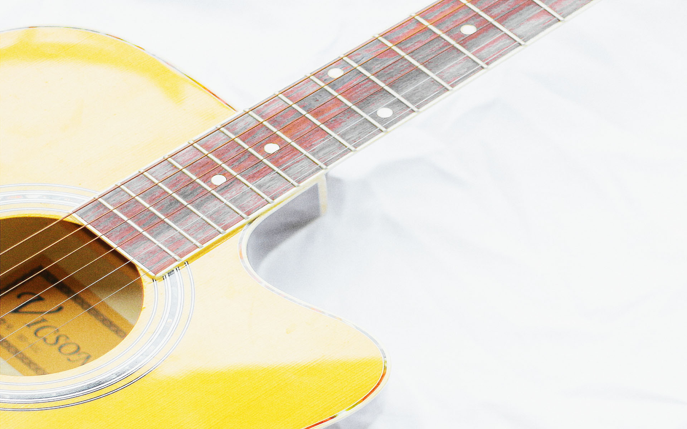
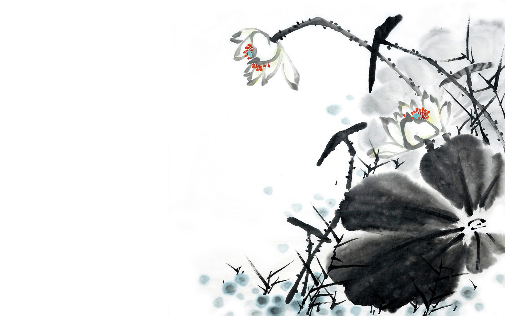
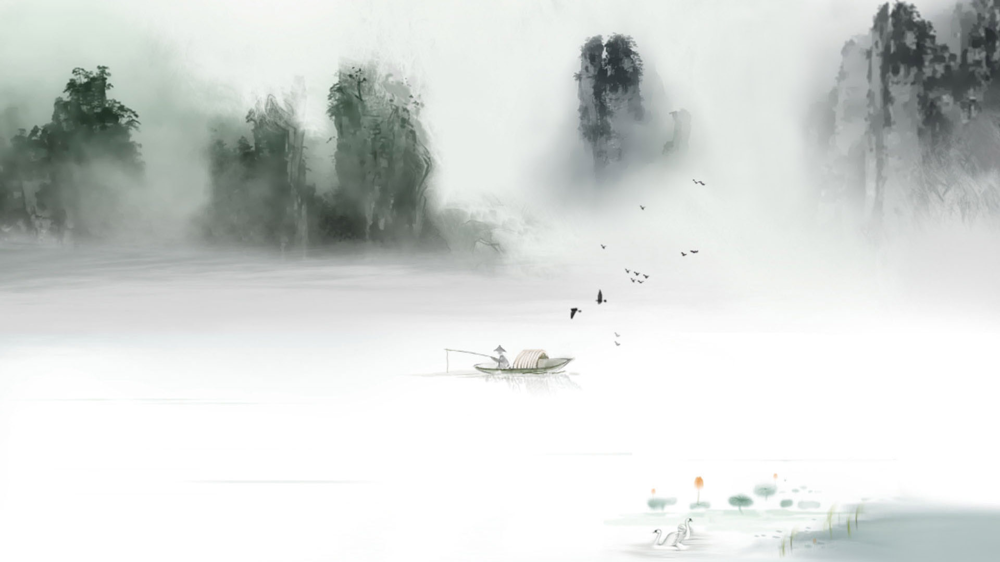

上方菜单可进行自定义配置
欢迎使用诗词桌面！
简介
本程序能够自动地、定时地从网路上随机获取一首唐、宋诗或宋词，并将文本整合在背景图片上，最后自动设置为壁纸。
使用效果
Project location
项目位于: https://github.com/okcy1016/poetry-desktop/
感谢您的 Star ( •⌄• ू )✧ ！
致谢
感谢以下项目的贡献者：
-
A simple, fast, and fun package for building command line apps in Go
https://github.com/urfave/cli -
ImageMagick 7
https://github.com/ImageMagick/ImageMagick -
Set the desktop wallpaper on Windows
https://github.com/sindresorhus/win-wallpaper
字体大小
字体颜色(rgba)
选择背景图片
预览
0.jpg
1.jpg
2.jpg
3.jpg
4.jpg

5.jpg
6.jpg
7.jpg
8.jpg
9.jpg
10.jpg
11.jpg
12.jpg

13.jpg
14.jpg
15.jpg
定时间隔
单位：小时